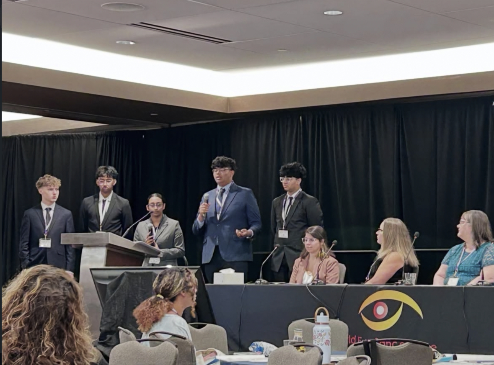

What it adds up to
What I learned
I was surprised that collecting turf, reading Big Nate, asking a rafting guide questions, and starting ICW all connected to the same interest in understanding things. Before this project, I had thought of them as separate memories.
I also learned that curiosity affects my relationships. It can start a conversation, but I need to listen and notice whether someone has time to keep talking.

Beyond my own story
My story shows how personal interests grow within a family and community. My grandparents, temple visits, and family routines helped shape my values. Libraries, parks, and travel gave me places to explore.
Other people may be just as curious but have different opportunities. My access to libraries and research mentors helped me follow my interests. ICW also taught me that sharing information is not always enough when fear or travel makes it hard to act on that information. Together, these experiences helped me see that development involves both the person and the setting they grow up in. This matches another idea from our slides: development is multicontextual, which means it is shaped by historical, socioeconomic, and cultural contexts (Bermudez, 2026).
Looking ahead
As I move toward adulthood, I want to study biology and eventually earn a PhD, so I can keep asking questions as a researcher. I hope that work helps people the way ICW does now.
I also want to become a better listener. I want to stay open to new ideas and keep learning from the people around me.